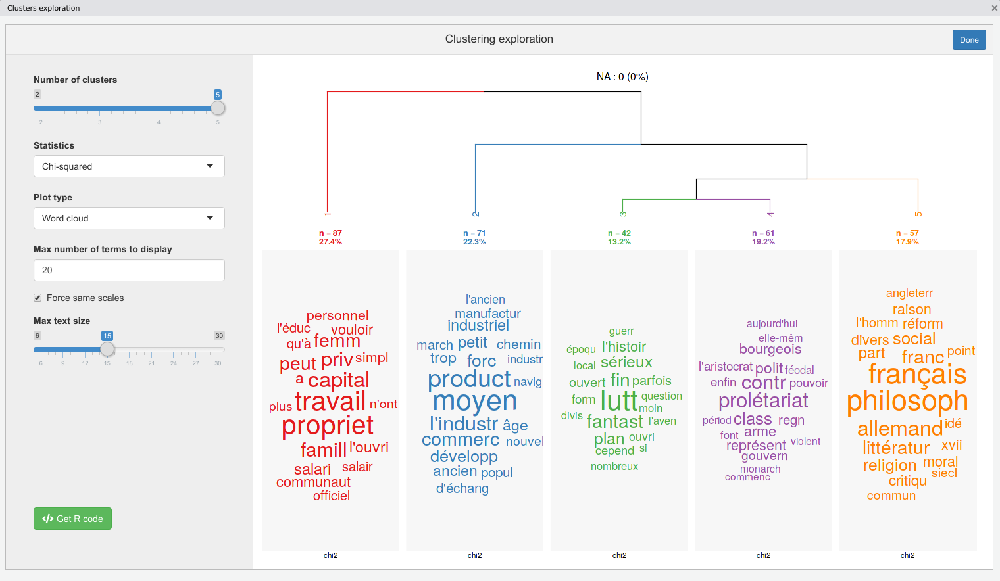
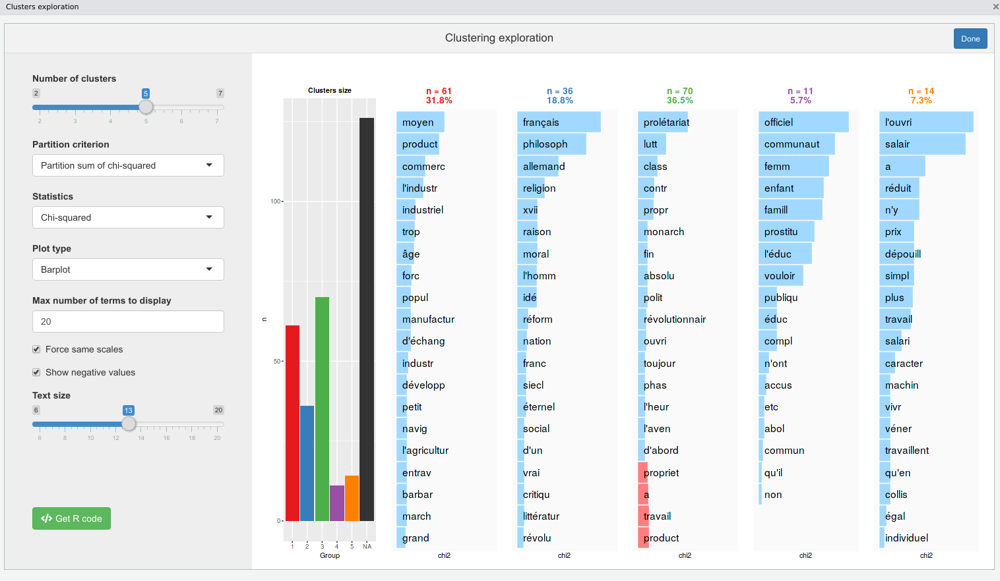

[fr] Utilisation de rainette
Julien Barnier
2020-02-07
introduction_usage.RmdAvertissement préalable : rainette est encore en cours de développement, et a été très peu testé pour l’instant. Il est donc susceptible de contenir des bugs plus ou moins importants pouvant fausser les résultats obtenus.
Installation
Le package n’étant pas encore disponible sur le CRAN, il s’installe depuis GitHub via l’extension remotes :
Préparation du corpus
Importation
La première étape consiste à importer votre corpus dans R. Vous pouvez utiliser un corpus au format tm ou quanteda par exemple, ou bien utiliser la fonction import_corpus_iramuteq pour importer directement un corpus depuis un fichier texte au format Iramuteq. Dans ce cas vous obtiendrez un objet de type corpus du package quanteda. Les métadonnées éventuelles présentes dans le fichier (variables étoilées) sont importées en tant que métadonnées du corpus (variables de docvars(corpus)).
Pour ce document, on va importer le texte du Manifeste du parti communiste (Karl Marx et Friedrich Engels, 1848, source wikisource). Celui-ci est placé dans un fichier texte au format Iramuteq fourni avec rainette. Le corpus est composé de quatre documents, un document par partie de l’ouvrage.
library(rainette)
library(quanteda)
## Import du corpus
fichier <- system.file("extdata", "manifeste_pc.txt", package = "rainette")
corpus <- import_corpus_iramuteq(fichier)On peut vérifier que notre corpus est bien constitué de 4 documents (l’introduction et les trois parties principales), et d’une variable de métadonnée :
## Corpus consisting of 4 documents and 1 docvar.Cette variable de métadonnée est justement la partie correspondant au texte :
## partie
## text1 intro
## text2 I
## text3 II
## text4 IIIDécoupage en segments
La méthode Reinert de classification s’applique en général à des segments de texte relativement courts (appelés uce, unités de contexte élémentaires), et non à des textes longs. Une première étape consiste donc à découper chaque texte du corpus en segments via la fonction split_segments. Ici on découpe en segments d’environ 40 mots (l’algorithme essaie de tenir compte de la ponctuation pour, par exemple, placer les césures entre des phrases ou au niveau d’une virgule).
Notre corpus est désormais constitué de 318 segments et 2 variables de métadonnées :
## Corpus consisting of 318 documents and 2 docvars.Si on regarde les nouvelles métadonnées, on peut voir que la variable partie a été dupliquée pour chaque segment correspondant, et une nouvelle variable segment_source indique le document d’origine du segment.
## partie segment_source
## text1_1 intro text1
## text1_2 intro text1
## text1_3 intro text1
## text1_4 intro text1
## text1_5 intro text1
## text2_1 I text2On peut aussi visualiser les premiers segments de texte calculés :
## text1_1
## "Un spectre hante l'Europe , le spectre du communisme . Toutes les puissances de la vieille Europe se sont unies en une Sainte-Alliance pour traquer ce spectre : le Pape et le Czar , Metternich et Guizot , les radicaux de France et les policiers d'Allemagne ."
## text1_2
## "Quelle est l'opposition que n'ont pas accusée de communisme ses adversaires au pouvoir ? Quelle est l'opposition qui , à son tour , n'a pas relancé à ses adversaires de droite ou de gauche l'épithète flétrissante de communiste ?"Calcul et traitement de la matrice termes-documents
L’étape suivante est de calculer la matrice termes-documents (dtm), grand tableau numérique avec les documents en lignes, les mots en colonnes, et le nombre d’occurrences de chaque mot dans chaque document comme valeurs.
Notre corpus étant au format quanteda, on va utiliser les fonction de cette extension.
D’abord on calcule la dtm en convertissant le texte en minuscules, et en supprimant ponctuation, nombres, et les mots-outils français les plus courants :
dtm <- dfm(corpus, remove = stopwords("fr"), tolower = TRUE, remove_punct = TRUE, remove_numbers = TRUE)On va ensuite procéder à la racinisation des termes, puis on va supprimer les termes apparaissant dans moins de 3 segments :
De nombreux autres traitements seraient possibles ou préférables, mais on se contentera de cette matrice pour cet exemple.
Classification simple
Une fois notre matrice prête, on peut procéder à une première forme de classification : une classification descendante hiérarchique simple, calculée avec la fonction rainette. Ici on va lui passer plusiurs arguments : le nombre maximal de classes souhaitées (k = 5) et le nombre minimal de termes pour qu’une classe soit découpée en deux à l’étape suivante de la classification (min_split_members = 10).
L’argument min_uc_size, lui, indique le nombre minimal de mots par segment. En effet, lors du calcul de la dtm, certaines formes (mots-outils, mots trop peu fréquents) ont été supprimées, nos segments peuvent donc varier en taille (entendue comme le nombre de mots encore présents). Avec min_uc_size = 10, les segments comportant moins de 10 formes sont regroupés avec le segment suivant jusqu’à atteindre la taille minimale souhaitée.
L’objet résultat ne nous dit pas grand chose en lui-même :
##
## Call:
## rainette(dtm = dtm, k = 5, min_uc_size = 10, min_split_members = 10)
##
## Cluster method : reinert
## Number of objects: 5Pour faciliter l’exploration des résultats, rainette propose une interface interactive sous la forme d’un gadget shiny, qui peut être lancée avec la fonction rainette_explor :
L’interface devrait ressembler à quelque chose comme ça :

Vous pouvez modifier le nombre de classes, la statistique utilisée pour le calcul des termes caractéristiques, etc. Par défaut, les graphiques sous chaque classe vous indiquent les termes les plus caractéristiques du groupe positivement (en bleu) ou négativement (en rouge) selon la statistique considérée.
À noter que vous pouvez aussi opter pour des graphiques sous forme de nuages de mots :

Cette interface vous permet d’expérimenter librement sur le nombre de classes et leur interprétation. Vous pouvez à tout moment cliquer sur le bouton Get R code pour obtenir le code R correspondant au graphique actuellement affiché, ainsi que la commande cutree_rainette qui vous permet de récupérer les groupes d’appartenance de chaque document du corpus, là aussi selon le nombre de groupes actuellement affichés.
## Clustering description plot
rainette_plot(res, dtm, k = 5, type = "bar", n_terms = 20, free_scales = FALSE,
measure = "chi2", show_negative = "TRUE", text_size = 11)
## Groups
cutree_rainette(res, k = 5)Vous pouvez par exemple utiliser l’appel de cutree_rainette pour ajouter comme nouvelle métadonnée du corpus le groupe d’appartenance pour la classification en 5 classes :
## partie segment_source group
## text1_1 intro text1 1
## text1_2 intro text1 1
## text1_3 intro text1 5
## text1_4 intro text1 5
## text1_5 intro text1 5
## text2_1 I text2 3Vous pouvez aussi récupérer directement les statistiques de spécificité de chaque groupe à l’aide de rainette_stats :
## [[1]]
## feature chi2 p n_target n_reference sign
## 1 travail 52.86903 3.564926e-13 33 10 positive
## 2 propriet 52.69092 3.903544e-13 39 16 positive
## 3 capital 34.79873 3.656111e-09 20 5 positive
## 4 priv 30.85743 2.776970e-08 13 0 positive
## 5 famill 28.21246 1.087024e-07 12 0 positive
##
## [[2]]
## feature chi2 p n_target n_reference sign
## 1 moyen 59.39834 1.287859e-14 27 9 positive
## 2 product 46.17588 1.080991e-11 38 30 positive
## 3 l'industr 29.58388 5.354829e-08 14 4 positive
## 4 commerc 26.21111 3.060563e-07 12 3 positive
## 5 forc 21.97464 2.762769e-06 16 11 positive
##
## [[3]]
## feature chi2 p n_target n_reference sign
## 1 lutt 59.11080 1.487699e-14 21 15 positive
## 2 fin 25.24927 5.037851e-07 5 0 positive
## 3 fantast 25.24927 5.037851e-07 5 0 positive
## 4 sérieux 18.89793 1.379021e-05 4 0 positive
## 5 plan 18.89793 1.379021e-05 4 0 positive
##
## [[4]]
## feature chi2 p n_target n_reference sign
## 1 prolétariat 31.24083 2.279215e-08 29 29 positive
## 2 contr 30.42046 3.478407e-08 23 19 positive
## 3 class 20.94289 4.731816e-06 40 64 positive
## 4 polit 16.31873 5.353218e-05 14 13 positive
## 5 arme 14.79927 1.195819e-04 5 0 positive
##
## [[5]]
## feature chi2 p n_target n_reference sign
## 1 philosoph 59.75740 1.076916e-14 13 0 positive
## 2 français 58.72602 1.809664e-14 14 1 positive
## 3 allemand 33.45307 7.300444e-09 13 6 positive
## 4 franc 26.73500 2.333556e-07 10 4 positive
## 5 littératur 25.64104 4.112004e-07 9 3 positiveClassification double
Le deuxième type de classification proposé est une classification double : selon la méthode proposée par Max Reinert, on effectue deux classifications simples en faisant varier la taille minimale des segments, puis on “croise” les résultats de ces deux classifications pour déterminer de nouvelles classes, potentiellement plus robustes.
Une classification double utilise la fonction rainette2. Celle-ci peut se faire de deux manières. On peut d’abord effectuer les deux classifications simples, ici une avec une taille de segment minimale à 10, et une autre à 15 :
res1 <- rainette(dtm, k = 7, min_uc_size = 10, min_split_members = 10)
res2 <- rainette(dtm, k = 7, min_uc_size = 15, min_split_members = 10)Puis on utilise rainette2 sur ces deux objets résultats, en lui indiquant le nombre maximal de classes à calculer (argument max_k) et le nombre minimal de segments par classe (argument min_members) :
L’autre manière est d’appeler directement rainette2 sur notre matrice dtm, en lui indiquant avec les arguments uc_size1 et uc_size2 les deux tailles de segments souhaitées :
L’objet résultat est un tibble contenant, pour chaque valeur de k, les partitions optimales trouvées et leurs caractéristiques. Là encore, une interface interactive est proposée pour visualiser et explorer ces résultats. Elle se lance via la fonction rainette2_explor :
 L’interface est très semblable à la précédente, sauf qu’il n’y a plus de dendrogramme mais à la place un diagramme en barre des effectifs des groupes. Soyez attentifs aux NA, qui représentent les segments non classés : contrairement à la classification simple, ils peuvent être assez nombreux ici.
Là encore, vous pouvez utiliser le bouton Get R code pour récupérer et copier/coller le code R permettant de reproduire le graphique affiché, et récupérer les groupes d’appartenance des segments du corpus.
Vous pouvez également utiliser rainette_stats pour récupérer les statistiques de spécificité des groupes :
## [[1]]
## feature chi2 p n_target n_reference sign
## 1 moyen 55.74386 8.260059e-14 24 12 positive
## 2 product 49.66329 1.825318e-12 35 33 positive
## 3 commerc 33.72298 6.354571e-09 12 3 positive
## 4 l'industr 31.05960 2.502263e-08 13 5 positive
## 5 industriel 22.65549 1.938055e-06 10 4 positive
##
## [[2]]
## feature chi2 p n_target n_reference sign
## 1 product -38.76011 4.792209e-10 6 62 negative
## 2 a -30.50262 3.334166e-08 4 47 negative
## 3 travail -30.12561 4.049491e-08 2 41 negative
## 4 propriet -27.86896 1.298154e-07 6 49 negative
## 5 moyen -27.50612 1.565982e-07 1 35 negative
##
## [[3]]
## feature chi2 p n_target n_reference sign
## 1 l'ouvri 108.83774 0.000000e+00 8 2 positive
## 2 salair 99.88853 0.000000e+00 6 0 positive
## 3 a 53.47166 2.623457e-13 14 37 positive
## 4 réduit 46.89565 7.486900e-12 4 1 positive
## 5 n'y 46.89565 7.486900e-12 4 1 positiveSi certains points n’ont pas été affecté à un groupe, vous pouvez utiliser rainette2_complete_groups pour les assigner au groupe le plus proche selon une méthode k-nearest neighbors :